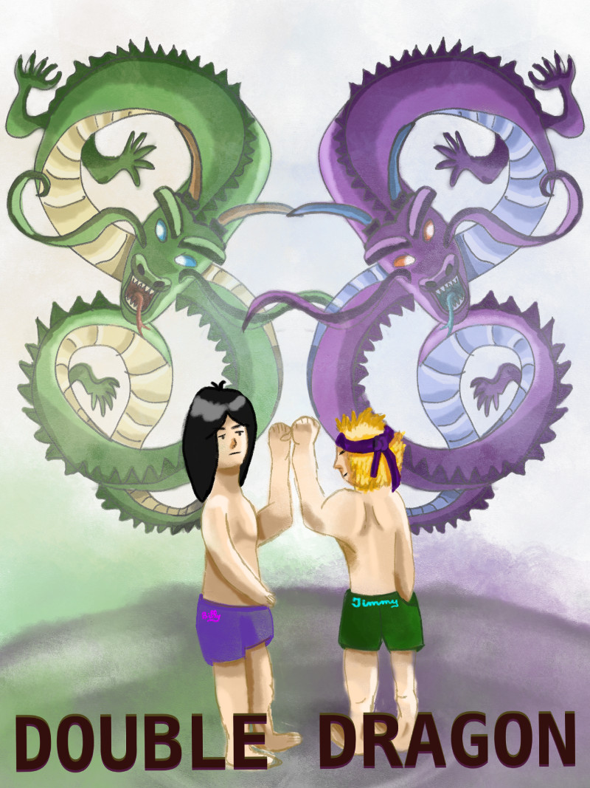

Inktober 2018 - J.29 : Double
Publié le 29/10/2018 dans Dessin.
La fin du défi est proche et j’ai fait quelques progrès sur l’utilisation du logiciel de dessin Sketchbook.
Aujourd’hui, le thème m’a fait penser à un vieux dessin animé de combats. Voici donc Billy et Jimmy.
